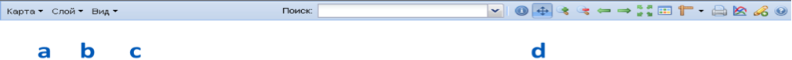

Панель главного меню имеет следующий вид:
Она содержит меню Карта, Слой и Вид в левой части (a b c), а также окно Поиск и кнопки управления в правой части (d).
Кнопки управления активируют операции путем нажатия на соответствующую пиктограмму.
Пиктограммы имеют всплывающие подсказки.